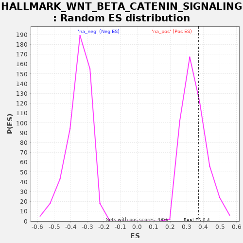

| | | Dataset | deseq_res_for_gsea |
| Phenotype | NoPhenotypeAvailable |
| Upregulated in class | na_pos |
| GeneSet | HALLMARK_WNT_BETA_CATENIN_SIGNALING |
| Enrichment Score (ES) | 0.36996803 |
| Normalized Enrichment Score (NES) | 1.0698352 |
| Nominal p-value | 0.31799164 |
| FDR q-value | 0.6161821 |
| FWER p-Value | 0.999 |
Table: GSEA Results Summary
 Fig 1: Enrichment plot: HALLMARK_WNT_BETA_CATENIN_SIGNALING
Fig 1: Enrichment plot: HALLMARK_WNT_BETA_CATENIN_SIGNALING
Profile of the Running ES Score & Positions of GeneSet Members on the Rank Ordered List
| PROBE | GENE SYMBOL | GENE_TITLE | RANK IN GENE LIST | RANK METRIC SCORE | RUNNING ES | CORE ENRICHMENT | | 1 | HEY2 | | | 279 | 0.956 | 0.0877 | Yes |
| 2 | RBPJ | | | 871 | 0.835 | 0.1450 | Yes |
| 3 | FZD1 | | | 892 | 0.829 | 0.2332 | Yes |
| 4 | DLL1 | | | 907 | 0.823 | 0.3211 | Yes |
| 5 | NOTCH4 | | | 2111 | 0.604 | 0.3198 | Yes |
| 6 | CCND2 | | | 2311 | 0.567 | 0.3700 | Yes |
| 7 | CUL1 | | | 3568 | 0.324 | 0.3356 | No |
| 8 | KAT2A | | | 3780 | 0.288 | 0.3549 | No |
| 9 | HDAC2 | | | 4703 | 0.150 | 0.3203 | No |
| 10 | DKK1 | | | 4848 | 0.132 | 0.3265 | No |
| 11 | MAML1 | | | 5179 | 0.095 | 0.3185 | No |
| 12 | SKP2 | | | 5216 | 0.091 | 0.3264 | No |
| 13 | NKD1 | | | 6173 | 0.022 | 0.2760 | No |
| 14 | GNAI1 | | | 6635 | 0.007 | 0.2513 | No |
| 15 | TP53 | | | 6738 | 0.005 | 0.2462 | No |
| 16 | PSEN2 | | | 7551 | 0.000 | 0.2015 | No |
| 17 | CTNNB1 | | | 8099 | 0.000 | 0.1713 | No |
| 18 | NOTCH1 | | | 8144 | 0.000 | 0.1689 | No |
| 19 | AXIN2 | | | 8205 | 0.000 | 0.1656 | No |
| 20 | JAG2 | | | 8546 | 0.000 | 0.1468 | No |
| 21 | WNT5B | | | 8676 | 0.000 | 0.1397 | No |
| 22 | TCF7 | | | 8953 | -0.000 | 0.1245 | No |
| 23 | JAG1 | | | 9318 | -0.000 | 0.1044 | No |
| 24 | FZD8 | | | 9443 | -0.000 | 0.0976 | No |
| 25 | WNT6 | | | 9455 | -0.000 | 0.0969 | No |
| 26 | FRAT1 | | | 9506 | -0.000 | 0.0942 | No |
| 27 | MYC | | | 10082 | -0.000 | 0.0625 | No |
| 28 | HDAC5 | | | 10163 | -0.000 | 0.0581 | No |
| 29 | NCSTN | | | 10182 | -0.000 | 0.0571 | No |
| 30 | ADAM17 | | | 10365 | -0.000 | 0.0471 | No |
| 31 | HEY1 | | | 10483 | -0.001 | 0.0407 | No |
| 32 | PTCH1 | | | 10587 | -0.001 | 0.0351 | No |
| 33 | AXIN1 | | | 10862 | -0.003 | 0.0203 | No |
| 34 | WNT1 | | | 13006 | -0.135 | -0.0835 | No |
| 35 | NUMB | | | 14074 | -0.287 | -0.1114 | No |
| 36 | LEF1 | | | 14511 | -0.353 | -0.0974 | No |
| 37 | PPARD | | | 14988 | -0.435 | -0.0768 | No |
| 38 | HDAC11 | | | 16294 | -0.660 | -0.0777 | No |
| 39 | NCOR2 | | | 16623 | -0.721 | -0.0181 | No |
| 40 | DVL2 | | | 17979 | -0.958 | 0.0104 | No |
Table: GSEA details [plain text format]

Fig 2: HALLMARK_WNT_BETA_CATENIN_SIGNALING: Random ES distribution
Gene set null distribution of ES for HALLMARK_WNT_BETA_CATENIN_SIGNALING